在乡野中阅读生命/郭于华（摘记）
体验与解读（代序）
做一个人类学者要面对许多困惑，来自外部的和来自内心的。
首先，“人类学是干什么的”？
紧接着的一个问题是，人类学特别是社会（文化）人类学的研究有什么用……按当下人们喜欢说的就是有什么效益（包括经济效益和补会效益）
-
可见有什么用并非只是人类学面临的问题。（奇怪的逻辑）
-
“学以致用”是我们一贯的传统．实用理性发达而知性思维委顿本来就是我们民族性格的特点之一
-
传统学术的皓首穷经、训沽考据、骈佪八股，虽然说不上对经世济民、对社会发展有多大用处，但至少可以打通做官的道路，有“用”是不言而喻的
-
“急用先学”、“立竿见影”的时代也还没有离我们而远去
-
因而，一门学科有什么用的问题是我们每每回避不了的
其次，人类学者还有面对被调杳者时产生的种种困惑
-
人类学田野作业最为热衷的方法就是“参与观察”和“深度访谈”。著名人类学家克利福德- 格尔茨(Clifford Geertz) 把人类学家称作职业入侵者(professional intruders)……总而言之，无论仅仅是被调查者、资料提供者还是成为朋友哥们儿，关键的问题是他们是否愿意你把他们的生活写出来，或者说他们是否同意把原本属于他们的对自身生活进行表述和解释的权利交给你。
-
人类学是从微观的生活世界入手从事研究的，或者说是从地方性知识出发通过探讨文化小传统而研究文化与社会的。我们常说作为一个人类学者有悟性是最重要的素质，也就是对生活的体验和感悟能力……传统人类学惯有的以所谓进步的强势文明面对落后的弱势文明而建立的文化霸权和优越感真该跑到爪哇国去了。
-
人类学者在田野中希冀看到当地文化未经外部力量触动过的最原始面貌，最质朴的事实，而他的到来和他的工作却往往参与或导致了当地人们行为思考方式乃至文化的改变。或许可以说人类学者与被调查者的互动亦是再造当地文化的过程。研究者与被研究者的关系、文化主位研究与客位研究的不同立场经常是困扰着人类学者的方法论问题
人类学者还要经常面临各种质疑和挑战，来自其他学科的与来自本学科的
-
最经常和突出的一个质疑就是所谓代表性的问题：人类学者的调查研究由于时段较长可以很深入、细致、完整。但是一个研究据点的材料有多少代表性和典型性？
-
此外还有客观性的问题：人类学者本人也属于一定的族群、文化，有自己的文化立场和价值体系……它是一门科学还是更接近于一门艺术或技艺？
-
此外，以客观、实证为标榜的民族志记述在反思人类学和后现代的批评面前是否会丧失其权威，文化研究所依据的“文本”是否只是人类学者的杜撰虚构而并非真正的“土著观点”？
-
这些反思和挑战已经和正在改变着人类学的著述方式
人类学者还得面对来自本学科其他学者的发问和检验。即一个人类学者在一时一地所做的调查研究、分析判断是否经得起其他学者的验证，是否能通过重复而证实或证伪。
在中国做一个人类学者面临着双重的困境
-
一方面，我们必须正视由于历史、文化乃至政治原因造成的中国的社会文化人类学的微弱与沉默的现状
-
另一方面．在世界范围内传统人类学的权威、主流及其理论方法在社会文化的剧变中和学术批判与反思中均遭到攻击，我们对此亦不能视而不见，尽管所谓传统的人类学工作在中国还远未做好。
面对以上种种疑问与困惑，我们该何以处之？每当这类问题出现时，我所能做的就是回到起点，即从人类学的开端和自己从事这门学科的开端来思考。
-
人类学……起源于对与己不同的社会与文化的好奇。这种探讨很快就和殖民统治者治理当地社会的需要发生关联，而且在其后的历史中也不时地为政治、战争决策提供依据。在时代发展与学术成长中它逐渐摆脱殖民色彩成为社会科学的一个门类．并且随着现代社会的来临不断地将研究视野从原始民族扩展到包括本土社会在内的全部文化。不过直到现在，其对文化差异及文化比较的研究旨趣却还是初终未改。
-
从自身选择的角度来看，把人类学作为一种志业同样是出于对文化的好奇心，即对生存于不同环境中的不同的人们所具有的不同生活方式和不同想法进行探究的愿望，而且这种探究实际上也是在了解和认识自身和自己的文化……人类学对文化的研究表现了人之为人的最本质的要求之一……探索宇宙万物奥秘的冲动……可知人与动物的基本区别是他能够创造并且传承文化……对人类文化意义的理解和解释则是对人的最本质特点的探寻和体现。
但无论如何，我们大可先将“有什么用＂的忧虑放在一边。概言之，人如果不是人，人类学则一尤所用。想到这一层，我们就可以拿着微薄的薪水，时常漂泊于偏远闭塞被时尚忘却的角落，思考行一时也不知道有什么用的问题，做着旁人看来简直就是莫明其妙的事情然而却保持着恬淡平静和心安理得。
我们还能做的是放眼前瞻，注目当前的和未来的世界。
- 人类学向以追寻探索人类文化的差异为主旨，其实它也完全可以通过对各个不同群体、不同文化的研究发现人类普同的特性和多元共存的可能，并且找出通往相互认识、理解、包容的共同家园之门。人类学如果能够在当今世界有“用”或有所作为，恐怕应该是提供各民族各文化之间的了解、沟通、宽容与和谐共存的道理与可能性。
……
我们并不想将一地所得或一己之见推广为放之四海而皆准的通则，我们所能做的只是呈现生活本身的纷繁复杂与丰富多样，展示平常生命的意义，使人们的视野更为开阔，看到更多的可能的选择，清醒而正确地认识自己．容纳更广泛和异样的“他人”。
下面的文字大多是在田野泥土中的所见所闻、所思所想、所感所悟。它们并非来自一时一地，但都可视作对于普通中国人、主要是乡土社会中普通农民的生活、生命的阅读与理解；它们是尽可能贴近生活世界的或者说是尽量以被访问者视角的观察、叙述和解释，但是，如格尔茨感受至深地指出的，一种文化是一系列文本的集合，人类学家只能努力地隔着那些创造这些文化的人们的肩头去解读它们。因而这样一种解读更像是对一套知识系统的学习和体验，其过程中偏颇和谬误也在所难免。我并不指望借此传达什么生活的真谛与深奥的哲理．而只是希望读者可以从中感受到生存冲动的力量和生活本身的多彩。
生命界域的沟通者与民间知识的守护者——一个阴阳先生的故事
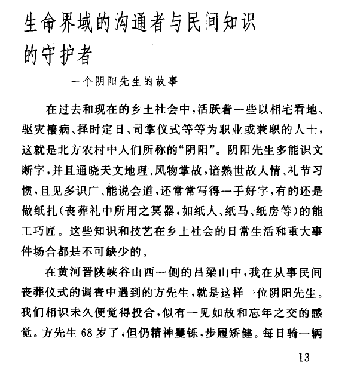
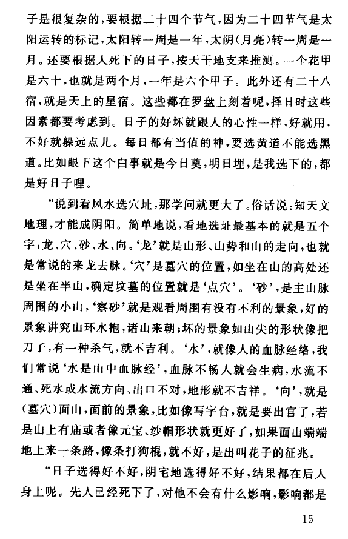
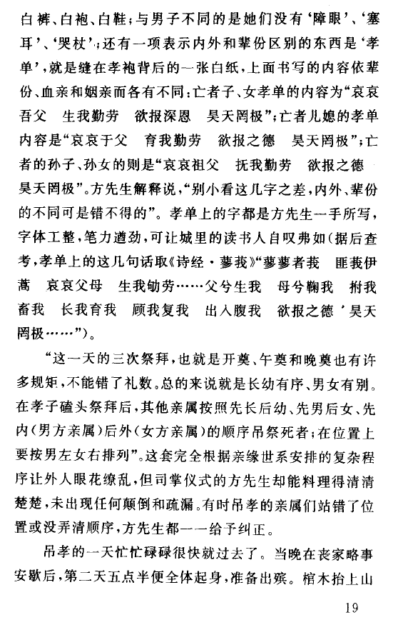
记得钟敬文先生🖱️ 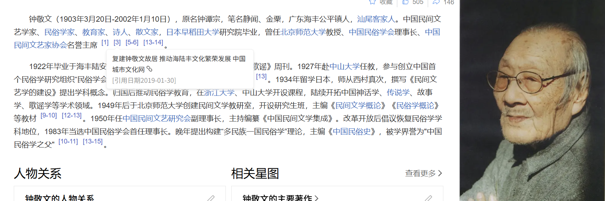 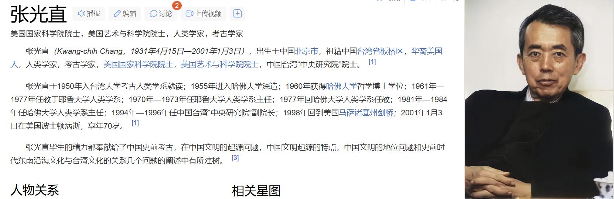
人生戏剧的最后一幕——鄂西清江流域的跳丧
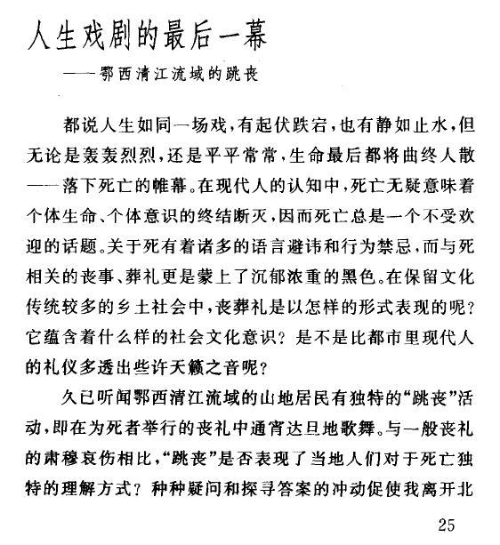
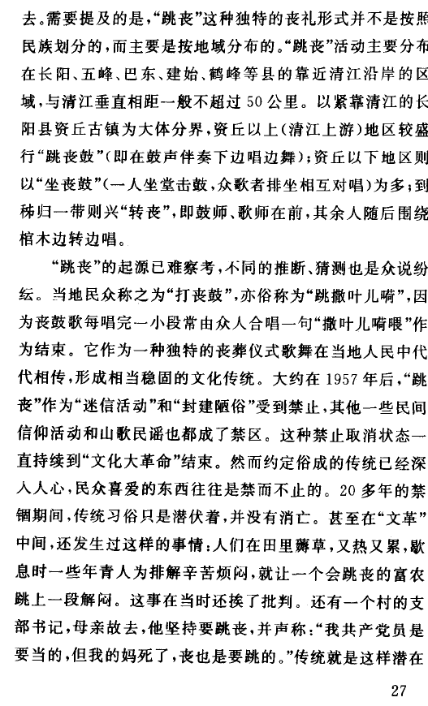
“我共产党员是要当的，但我妈死了，丧也是要跳的”
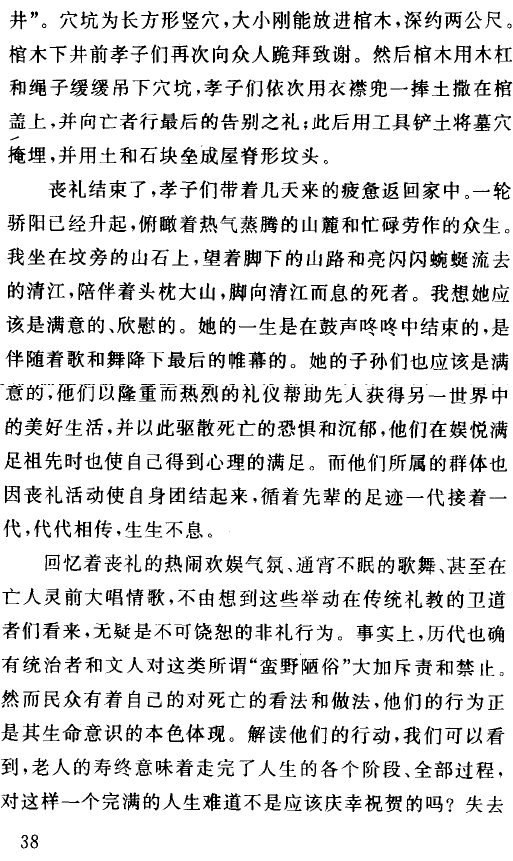
热闹的气氛，激昂、欢娱的情绪和节奏，表露了人们对于死亡亦即对于生命的理解。对辛劳了一生、养育了子嗣之后寿终正寝的老人，即当地人们称为“走顺头路”的老人来说，生活大概是没有遗憾、不该悲哀的。热闹的“自喜事”标志着生命完满的终结，抑或原本是对一种新生命（另一世界中生活的展开）开始的庆贺？我们知道，婚礼作为“红喜事”意味着不久家庭将要添丁进口，因而是生命诞生的前奏，那么丧葬礼可否理解为另一种生命形式开端的序曲？
八人抬的棺木上覆着大红毛毯，由吹鼓手作先导在众人的簇拥下向山坡上的墓地走去。出殡的仪仗很长，最前面是吹鼓手，其后死者长孙捧死者遗像，其他孝子成两行随行；棺柩前引一条几丈长的绳子，许多人牵绳而行（即古代所谓执绋🖱️之举），抬棺者八人．不时有人主动替换；另有一人在队伍旁边提篮抛撒纸钱，还有一人在队伍后面一路鸣鞭放炮。一路行来，抬棺的人时而疾驰，时而又停顿或后退，每到这时，众孝子就得跪下磕头，请求人们好好往前走。此举称为“整孝子＂，带有很大的戏谑色彩。这样时进时退．停停走走，五步一跪，十步一叩，不远的路走了老半天。望着棺木周围熙熙攘攘的人群，望着那一张张淌着汗水欢喜而朴实的面孔，尤其是看到棺木前长长的“拉丧绳＂，数不清的蚴黑而结实的手臂争先恐后地拉住它，我的心不禁怦然而动。一根拉丧绳将人们连接在一起，挽起一个群体、一个社会。丧葬礼对于传统社会的整合功能，恐怕没有比这更为直观、具象的写照了。
生命的窘迫与困惑——一位不适应的老人
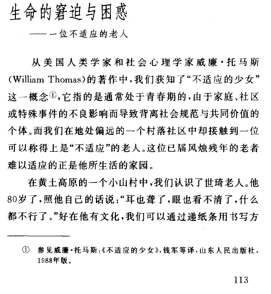
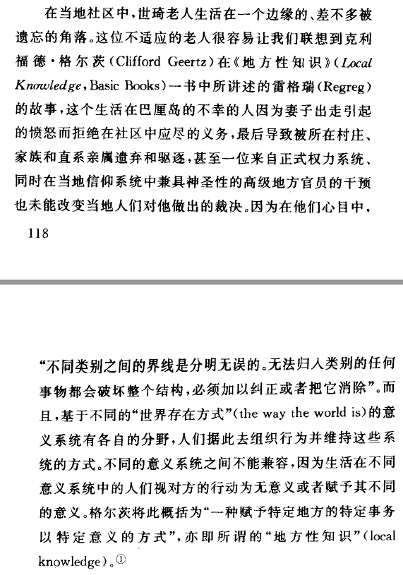
我们不妨把调查组的进入和所从事的工作视为一次来自外部但却是上方的文化意识与当地文化的互动过程，由此不难理解，世琦作为一个个体，在其社会化和文化濡化(enculturation)🖱️ 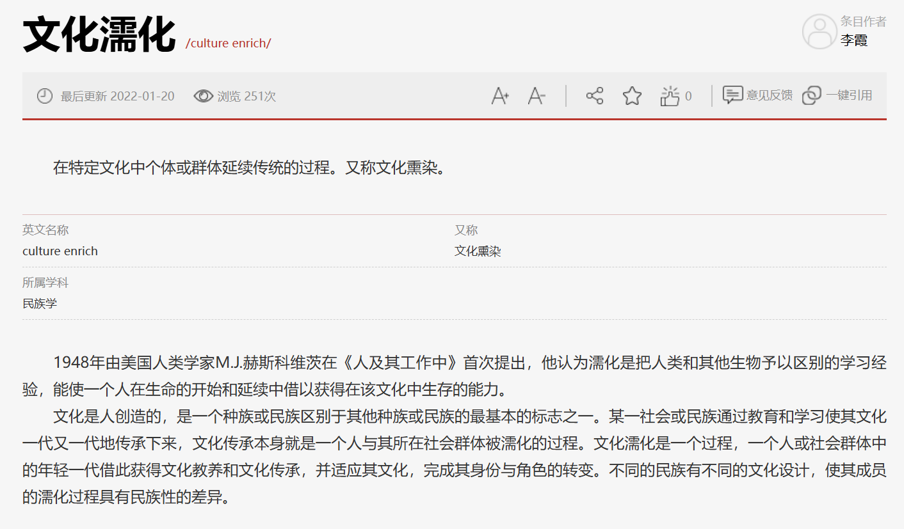
这位不适应的老人的故事让我们再次体会到格尔茨🖱️ 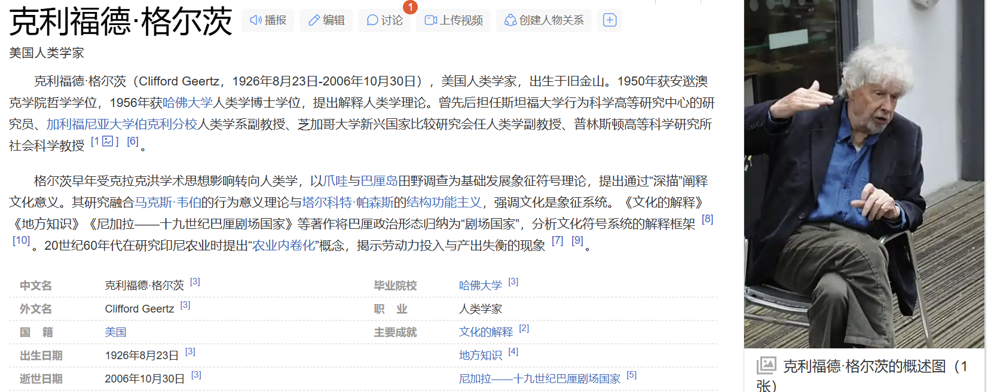
当代的文化人类学关注个人和群体生活所凭借的意义结构，此意义结构是通过“对理解的理解”而得以沟通、解释和表述的。小河村的个案让我们能够了解作为主流意识形态的国家意义系统如何与地方性知识发生联系与相互作用，又如何影响到个体的生活历程。据此，个人的生活史便可与大的社会文化的结构和变迁发生关联，成为不同意义系统之间关系的一种隐喻，进而提供从个体的生命经历理解国家与民间社会的关系、从微观叙事与个案研究探索深层文化意义和宏观社会世界的路径。